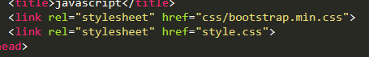

How to Link bootstrap to a website
15 Novembre 2019 Admin
In order to link a website to bootstrap you have to download bootstrap first. Then the second step is to link css and javascript file to the project folder.Like as shown below.

And then to link javascript

Command Line in Windows 10
15 November 2019 Admin
Download Ubuntu
The Windows 10 marketplace has a lot of apps related to various flavour of linux.One of them is Ubuntu. If you are using terminal in ubuntu a lot like me you can download and install ubuntu subsystems from microsoft store.Though, there are OpenSuse and kali linux including other flavours.
Using Terminal of Ubuntu in windows subsystem
The first thing to get started is to find the home folder in Ubuntu. The home folder is not located in users home directory as you would expect.The location is nested deep inside $USER dirctory.
C:\Users\onesi\AppData\Local\Packages\CanonicalGroupLimited.
Ubuntu18.04onWindows_79rhkp1fndgsc\LocalState\rootfs
In order to navigate to C: directory in Windows 10, you need to type
cd /mnt/c
Likewise, to navigate to Desktop from C: Drive you have to type
cd Users/$USER/Desktop
-> or pwd to check else to go to Documents
cd Users/$USER/Documents
namraj@Namraj-4GZ7:/mnt/c/Users/onesi/Documents$ pwd
How to take screen shots
In windows 10 taking a screen shot is very similar to ubuntu, the command shortcut to type in the keyboard
windows +shift + S.In Ubuntu, the command shortcut to take partial screenshot is shift + Print screen .I have a page if you want to know basic keyboard shortcuts on Ubuntu. To open a Terminal in Ubuntu is Ctrl+Alt+T. Knowing a basic list of shortcuts is very helpful, which saves a lot of time while working.